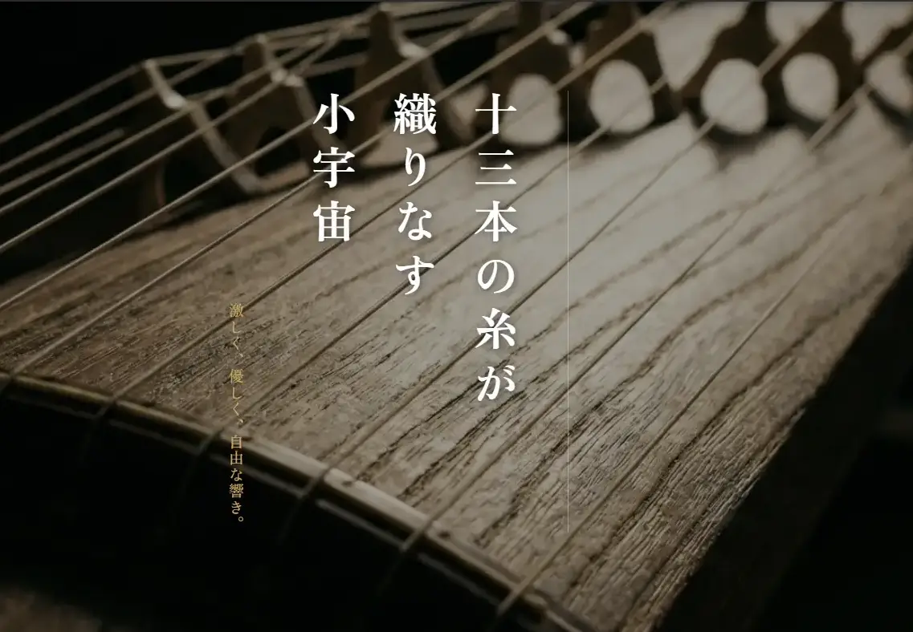

Vol.20 / Dark Fantasy Stop-Motion
魂を宿す木屑：
デル・トロ版『ピノッキオ』解体新書
2026.05.10 UP

◎ 作品概要：ファシズムと無垢な魂
ギレルモ・デル・トロ監督が長年温め続けた悲願のプロジェクト。舞台をムッソリーニ政権下のイタリアに移し、ピノッキオの「従順でないこと（不服従）」を美徳として描いた、大人向けのダークファンタジーです。
◎ 徹底解剖：ギレルモ・デル・トロのピノッキオ (2022)
未完成の美学
従来のピノッキオ像とは異なり、デル・トロ版は「削り残し」や「釘」がそのまま残る、荒々しい造形が特徴です。これは「不完全であること」こそが人間（あるいは愛される存在）の証であるという、監督の哲学を体現しています。
◎ 技術：マッキノン＆サンダースの神業
- 🔹 メカニカル・パペット： 制作は『コープスブライド』なども手掛けた英国の名門マッキノン＆サンダース。ピノッキオの細い手足の中に精巧なギアを仕込み、金属的な硬さと木材の温かみを両立させています。
- 🔹 3Dプリントの活用： 表情のバリエーションには3Dプリンターを活用しつつ、最終的な塗装は手作業で行うことで、CGにはない「物質感」を画面に残しています。